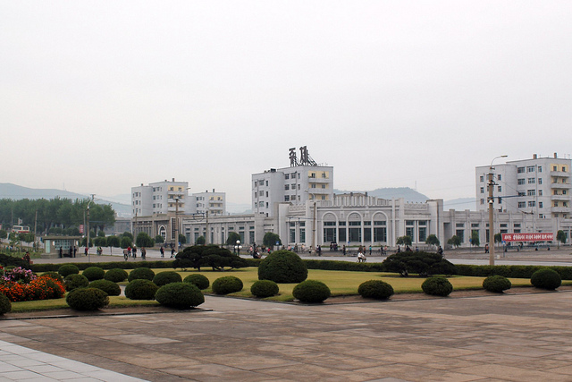
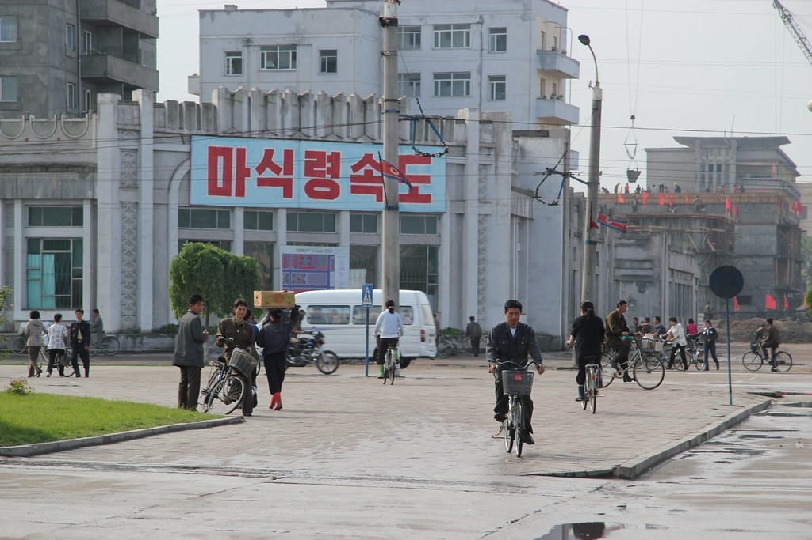
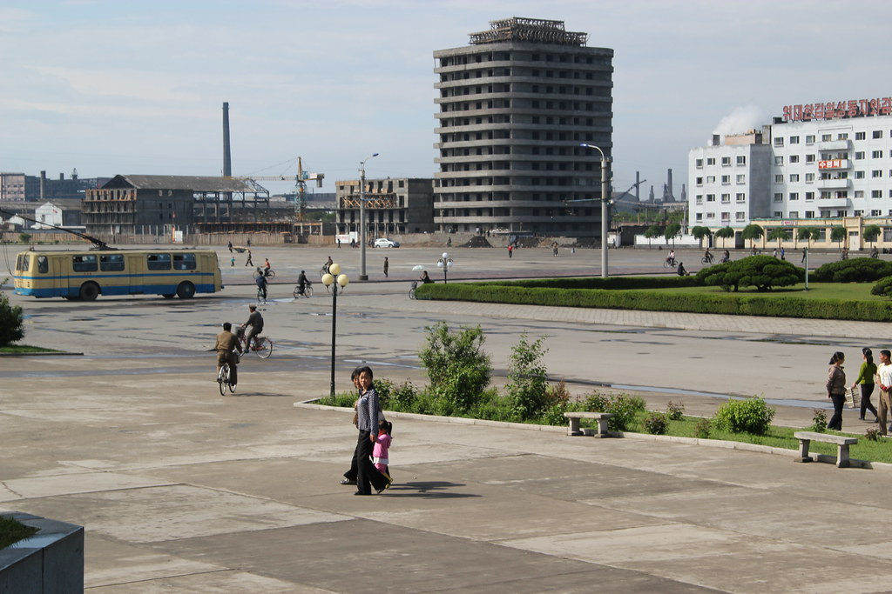
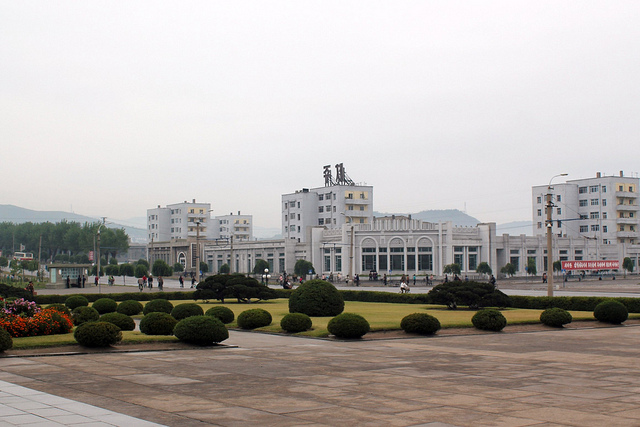
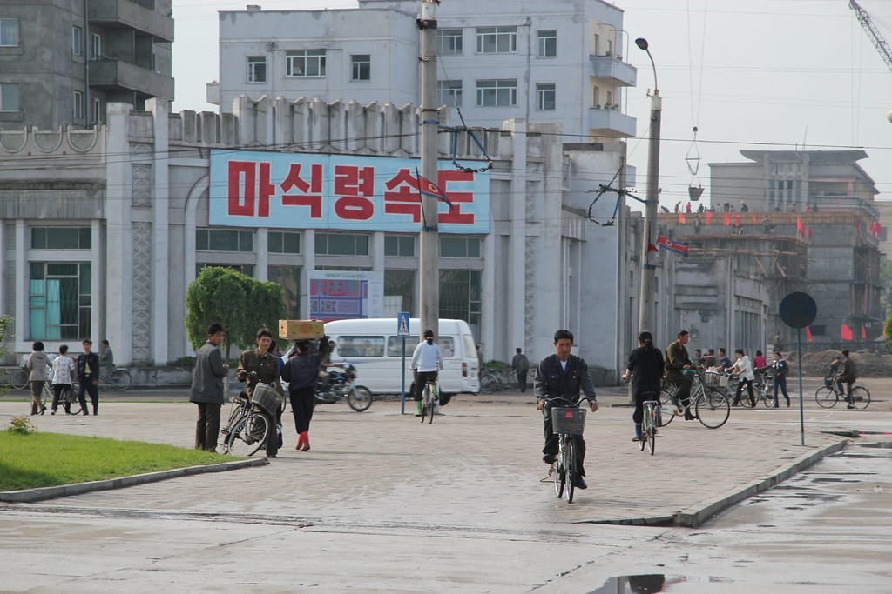
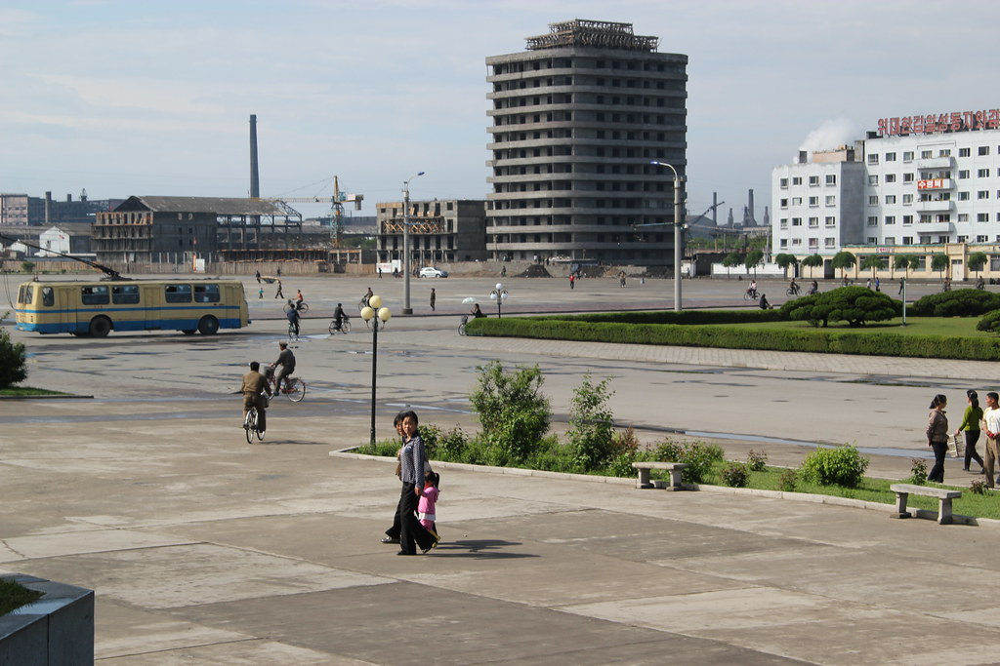
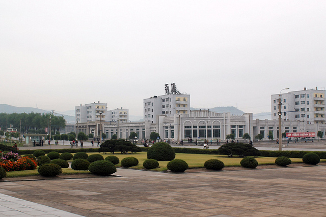
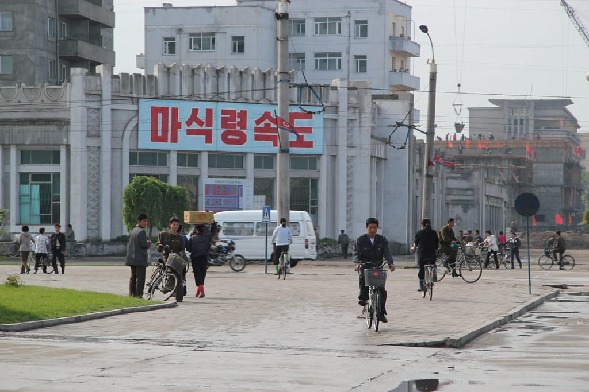
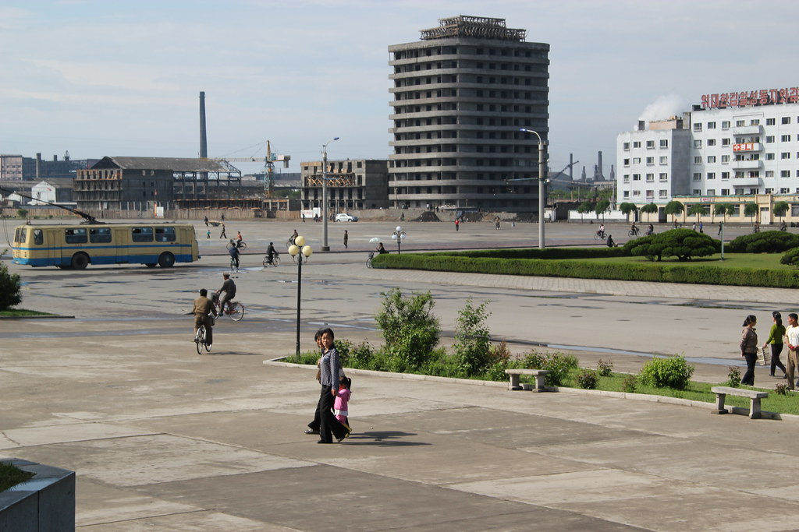

Chongjin fait partie des cinq plus grandes villes de Corée du Nord. Situé près des 19km de frontière avec la Russie, où l’on retrouve Vladivostok, Chongjin pourrait être assimilé à une ville importante dans le domaine touristique. Et pourtant, c’est bien sur ce sujet que la différence entre les autres villes nord-coréenne et Pyongyang s’observe.
Aujourd’hui, Chongjin ressemble plus à une ville soviétique des années 80 qu’une ville du XXIème siècle. L’organisation touristique de Corée du Nord essaye de ne pas mettre en avant la pauvreté en campagne, bien qu’elle soit réelle notamment dû à la famine ayant touché le pays à la fin du XXème siècle. A l’arrivé à Chongjin, on remarque directement la différence de richesse et de développement avec Pyongyang. Les nord-coréens vivants dans une ville autre que Pyongyang ressemblent à une classe sociale moyenne. Ils vivent de leur minime salaire obtenu dans les usines de sidérurgie ou grâce à l’agriculture. Les montagnes Chilbo, situés à proximité de Chongjin en face de la mer, ainsi que le temple Kaesim, sur le mont Pothak, construit en 826 représentent un intérêt touristique.
Ainsi, Chongjin est donc une ville hors du temps de par son développement réduit et ses différences avec Pyongyang mais représente un réel intérêt touristique avec ses montagnes qui l’entoure et son patrimoine culturel.


